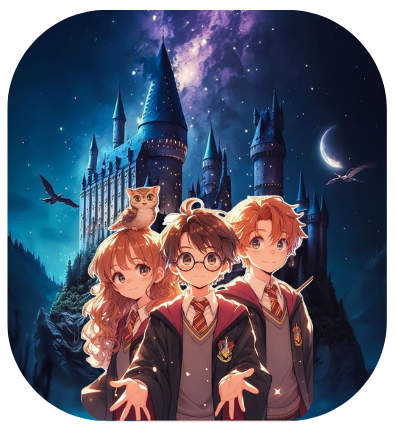
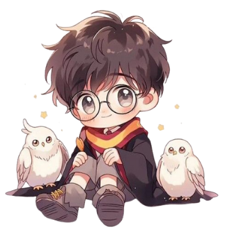
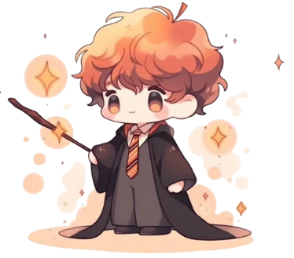
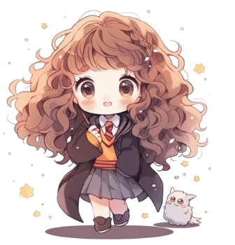

Harry Potter era só um garoto órfão morando com os tios até descobrir, aos 11 anos, que era um bruxo. Convidado para estudar em Hogwarts, uma escola de magia que ele nem imaginava existir, Harry descobre que é famoso por ter sobrevivido ao maior bruxo das trevas, Lord Voldemort. Na escola, ele aprende feitiços, voa em vassouras, joga Quadribol e encara perigos. Ao lado de Rony, o amigo fiel (com pavor de aranhas), e Hermione, a bruxa mais brilhante da turma, Harry vive aventuras que provam que a verdadeira magia está na amizade, coragem e nas escolhas. Como disse Dumbledore: “são as nossas escolhas que mostram quem realmente somos.”
Bem vindo ao mundo encantado de Hogwarts!
SINOPSE
Personagens Principais
Harry Potter
Harry Potter é conhecido como “O Menino que Sobreviveu”. Criado pelos tios que o tratavam mal, descobriu aos 11 anos que era bruxo e foi estudar em Hogwarts. Corajoso, leal e teimoso, Harry nunca foge de uma batalha, mesmo que preferisse estar jogando Quadribol ou comendo torta de abóbora no Salão Principal. Sua maior qualidade é sempre lutar pelo que acha certo, mesmo que isso signifique quebrar algumas regras no caminho.
Rony Weasley
Rony Weasley é o sexto filho da grande família Weasley. Com cabelos ruivos, muitas sardas e um apetite infinito, Rony é o amigo que sempre está ao lado de Harry em qualquer confusão. Tem medo de aranhas desde pequeno, mas enfrenta dragões, xadrez bruxo gigante e Comensais da Morte sem pensar duas vezes (ou quase). Apesar de inseguro às vezes, Rony mostra que a verdadeira coragem está em apoiar quem amamos mesmo nos momentos mais sombrios e ainda fazer piada no meio do caos.
Hermione Granger
Hermione Granger nasceu em uma família não-bruxa, mas mostrou desde cedo que inteligência não depende de sangue. É a aluna mais brilhante de Hogwarts, sabe todos os feitiços (e as regras) de cor, além de ter resposta para tudo. Mas não é só cérebro. Hermione é corajosa, justa e determinada a lutar pelo que acredita, como quando criou o F.A.L.E. para libertar os elfos domésticos. Sem ela, Harry e Rony provavelmente teriam sido expulsos, petrificados ou mortos já no primeiro ano. Com Hermione no trio, sempre há uma chance de dar certo, e uma grande pilha de livros na mochila.
Livros e Filmes em Ordem:
- Harry Potter e a Pedra Filosofal
- Harry Potter e a Câmara Secreta
- Harry Potter e o Prisioneiro de Azkaban
- Harry Potter e o Cálice de Fogo
- Harry Potter e a Ordem da Fênix
- Harry Potter e o Enigma do Príncipe
- Harry Potter e as Relíquias da Morte
Os livros podem ser encontrados em praticamente todas as livrarias físicas e online, como Amazon, Americanas, Submarino e Saraiva.
Os filmes podem ser assistidos na HBO Max ou alugados/comprados digitalmente em plataformas como Google Play Filmes e Apple TV.